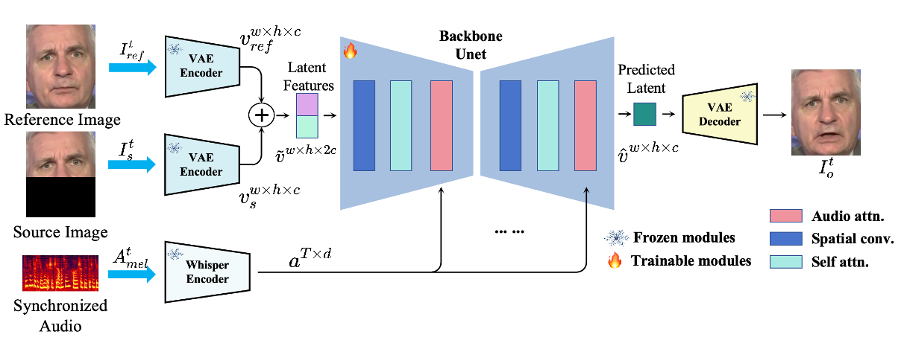
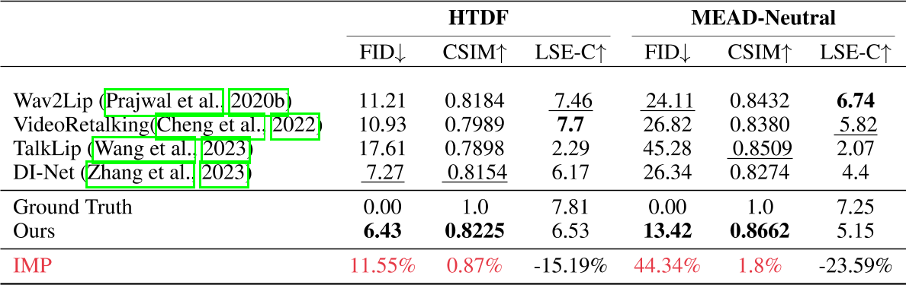

MuseTalk: Real-Time High Quality Lip Synchronization with Latent Space Inpainting
这篇论文是由腾讯与香港中文大学联合研发的实时高质量唇形同步技术，旨在解决人脸视觉配音中的高分辨率、身份一致性与唇形同步精度问题，尤其在实时场景（如直播）中表现突出。以下从技术方法、创新点、性能表现及应用场景等方面对该论文进行综合分析：
1. 研究背景与挑战
传统语音驱动唇形生成方法通常面临三大矛盾：
- 分辨率与实时性矛盾：高分辨率生成需复杂计算，难以满足实时需求；
- 身份一致性维护：动态唇形调整可能破坏面部其他区域的稳定性；
- 多语言适配：不同语言的发音口型差异需灵活建模。
现有方法如特定人物生成或一次性生成模型，虽在特定场景有效，但泛化性和实时性不足。MuseTalk通过潜在空间修复技术，在平衡上述矛盾上取得突破。
Framework

(a) 潜在空间建模
- 采用预训练VQ-VAE编码器将图像从像素空间映射到潜在空间，避免像素级损失（如L1/L2）导致的模糊问题。
[?]编码器换成了VQ-VAE，怎样复用LDM的预训练参数?
- 潜在空间操作：仅对目标图像的下半部（遮挡区域）和参考身份图像进行编码，保留其他面部特征不变。
(b) 音频特征提取
- 使用Whisper预训练模型提取音频特征：
- 输入为16kHz采样音频，生成80通道Mel频谱图\(（A_t^d \in \mathbb{R}^{T \times 80}）\)。
- 输出为时序音频特征\(（a^{T \times d}）\)，通过调整时间窗口\(T\)捕捉语音动态。
(c) 多模态对齐与融合
- U-Net结构：利用其多尺度特征融合能力，建模条件分布\(p(\hat{v}|a)\)，实现音频-视觉跨模态对齐。
- 特征拼接：将遮挡图像特征\(（v^{w \times h \times c}_ m）\)与参考身份图像特征\(（v^{w \times h \times c}_{ref}）\)沿通道维度拼接\(（v^{w \times h \times 2c}）\)，增强上下文信息。
2. 技术方法与创新
选择性信息采样（Selective Information Sampling, SIS）
本文会从输入视频中选择一帧作为参考图像。传统方法随机选取参考图像，可能导致冗余信息（如重复唇形或无关姿态）干扰模型训练，影响生成结果的细节清晰度与身份一致性。
但本文使用两种筛选策略并取交集来选择参考图像：
(a) 头部姿态对齐筛选（Pose-Aligned Set \(E_{\text{pose}}\)）
- 计算方式：基于面部关键点（尤其是下巴区域），计算每帧之间的欧氏距离（Euclidean distance），衡量头部姿态相似性。
- 筛选策略：选取与目标帧头部姿态最接近的 Top-K 帧，构成姿态对齐图像集 \(E_{\text{pose}}\)。
(b) 唇形差异筛选（Lip Dissimilarity Set \(E_{\text{mouth}}\)）
- 计算方式：基于内唇关键点的欧氏差异，衡量不同帧的唇形运动幅度。
- 筛选策略：选取与目标帧唇形差异最大的 Top-K 帧，构成唇形差异性图像集 \(E_{\text{mouth}}\)。
自适应音频调制（Adaptive Audio Modulation, AAM）
[?] 这一部分到底做了什么？
训练细节
训练方法
- 绕过扩散过程：直接输出融合特征结果，避免扩散模型的不确定性，提升生成效率与一致性。
- 双图像输入策略：
- 遮挡目标图像（仅下半部）：聚焦唇形区域，减少冗余计算。
- 参考身份图像：保持面部其他区域（如眼睛、肤色）的静态特征，确保身份一致性。
- 端到端生成：融合后的特征（\(\hat{v}^{w \times h \times c}_t\)）通过预训练VAE解码器直接生成最终视频帧，实现实时高质量输出。
损失函数
| 损失函数 | 定义/公式 | 作用 | 技术细节 | 权重 |
|---|---|---|---|---|
| 重建损失 (L₁) | \( L_{\text{rec}} = | I^o_t - I^{\text{gt}}_t |_1 \) | 最小化像素级差异，保证颜色与结构一致性 | 基于L1范数，直接约束生成图像与真值图像的像素对齐 | 1.0 |
| 感知损失 (Lₚ) | \( L_p = | V(I^o_t) - V(I^{\text{gt}}_t) |_2 \) | 通过高层特征对齐增强细节与视觉真实感 | 使用预训练VGG19提取特征（ReLU层），计算特征空间L2距离 | 0.01 |
| GAN损失 (L_GAN) | \( L _ G = \mathbb{E} [\log (1 - D(I ^ o_ t))] \) \(L _ D = \mathbb{E}[\log(1 - D(I^ {\text{gt}} _ t))] + \mathbb{E}[\log (D(I ^ o _ t))]\) \( L _ {\text{GAN}} = L _ G + L _ D \) | 通过对抗训练提升生成细节丰富度 | 判别器D区分生成图像\(I^o_t\)与真值\(I^{\text{gt}}_t\)；生成器G优化以欺骗D | 0.01 |
| 唇同步损失 (L_sync) | \( L_{\text{sync}} = -\frac{1}{N}\sum_ {i=1}^N \log[P_ {\text{sync}}(\text{SyncNet}(A^{\text{mel}}_i, I^o_i))] \) | 确保唇部运动与音频同步 | 基于SyncNet计算音频梅尔谱\(A^{\text{mel}}\)与唇部图像的余弦相似度概率\(P_{\text{sync}}\) | 0.03 |
| 总损失 (L) | \( L = L_{\text{rec}} + \lambda L_p + \mu L_{\text{GAN}} + \phi L_{\text{sync}} \) （\(\lambda=0.01, \mu=0.01, \phi=0.03\)） | 综合优化生成质量、真实感与唇部同步性 | 加权求和，平衡各损失项的贡献 | - |
关键说明
- 损失函数协同作用：
- 重建损失与感知损失互补：前者保证全局结构，后者增强细节（如纹理、光照）。
- GAN损失引入对抗机制，提升生成真实感；唇同步损失通过SyncNet约束音频-视觉对齐。
- 权重设计：
- 唇同步损失权重（\(\phi=0.03\)）较高，强调同步性优先；感知与GAN损失权重较低，避免过拟合细节。
实际客观指标上，这个方法的质量评价较好而对齐性较差。
- SyncNet改进：
- 使用重新训练的SyncNet（参考Prajwal et al., 2020b），优化多帧输入（N对音频-图像）的同步性评估。
3. 性能表现
- 生成质量：在256×256像素的面部区域中，唇形同步误差显著低于现有方法（如Wav2Lip），且画面一致性评分提升约20%；

- 实时性：在Tesla V100上推理速度达30 FPS以上，适用于直播等高实时性场景；
- 硬件适配：支持云端部署（如Google Colab）与本地高性能显卡，用户可通过调整面部中心点参数优化生成效果。
4. 应用场景
MuseTalk的灵活性使其在多个领域具有广泛潜力：
- 影视与游戏：用于角色口型修正、多语言配音同步，提升作品真实感；
- 虚拟人交互：结合腾讯的MuseV等视频生成模型，打造全流程虚拟人内容生产工具；
- 教育与社交：辅助语言教学中的发音口型演示，或为静态图像生成动态口型以增强互动性。
5. 局限与未来方向
- 硬件依赖：高质量生成需高性能GPU，对普通用户存在门槛（但可通过云端Colab缓解）；
- 动态面部细节：极端表情或遮挡场景下的唇形修复仍有提升空间；
- 扩展性：未来或引入更细粒度的情感驱动口型控制，增强表现力。
总结
MuseTalk通过潜在空间修复技术，在实时性与生成质量间取得平衡，为多模态内容生成提供了新范式。其开源代码与用户友好界面（如参数调节、多语言支持）进一步推动技术落地，成为影视、游戏、教育等领域的重要工具。未来研究可探索更复杂场景下的鲁棒性优化，以及与其他模态生成模型（如语音合成）的深度融合。